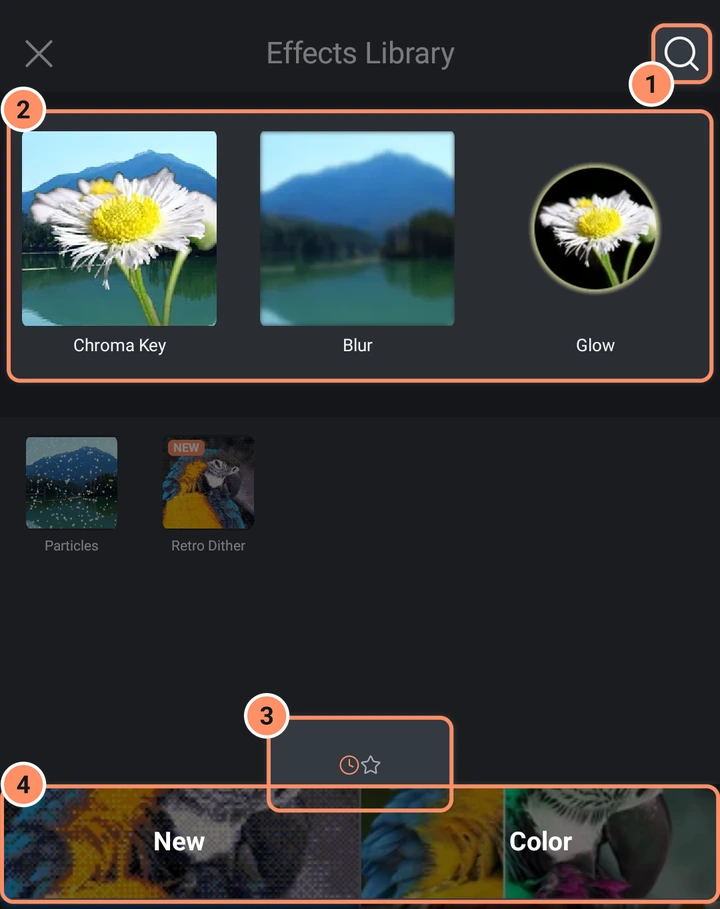
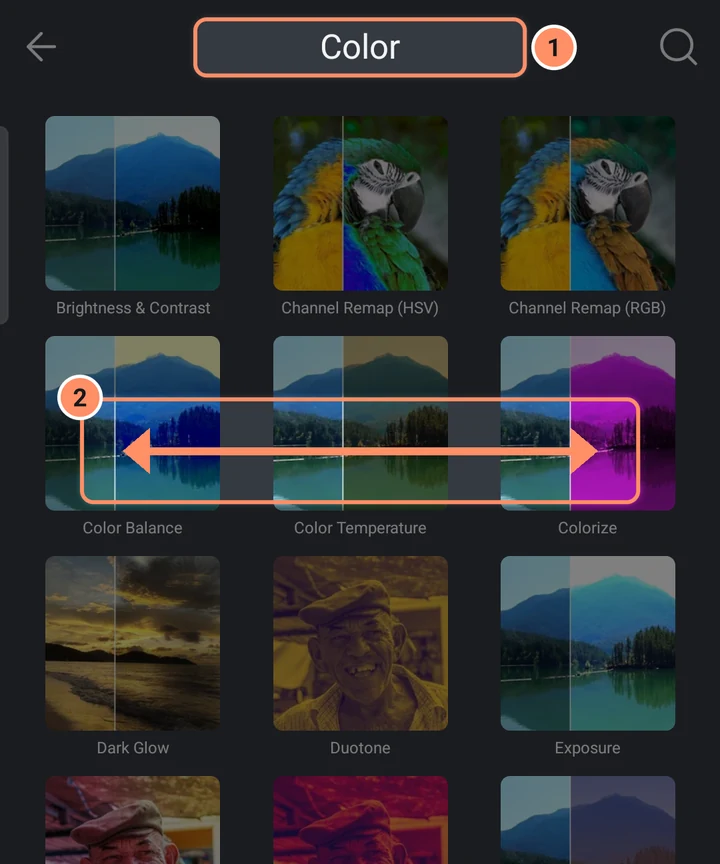
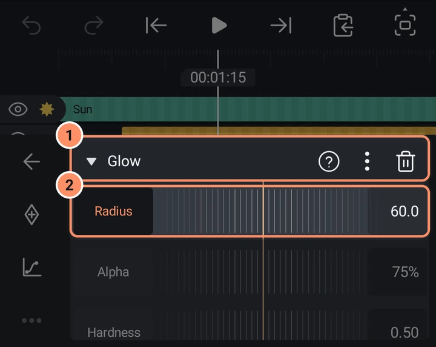
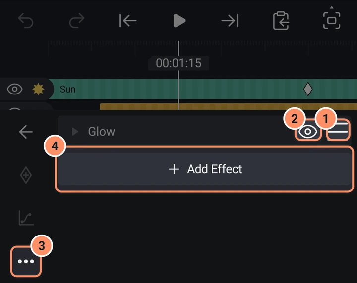
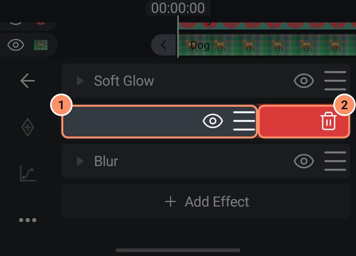

Efektleri kullanma
Efekt ekleyin, üst üste yığın, sıralayın, gizleyin, kopyalayın ve canlandırın, ve efekt kütüphanesinde doğru olanı bulun.
Bu sayfada
Bir efekt, bir katmanın nasıl göründüğünü veya hareket ettiğini değiştirir: bir bulanıklık, bir parlama, bir renk değişimi, bir sarsıntı. Bir katman istediğiniz kadar efekt içerebilir. AbsentMotion'da on iki kategoride 216 efekt vardır. Bu web sitesindeki efekt kütüphanesi, her efekti tüm ayarlarıyla listeler.
Efekt ekleme
- Bir katman seçin.
- Araç ızgarasında Efektler'e dokunun.
- Listenin sonundaki Efekt ekle'ye dokunun. Efekt kitaplığı açılır.
- Bir efekte dokunun. Standart ayarlarıyla eklenir ve ayarları hemen açılır.
Önce bir efekt hakkında okumak için, kutucuğuna basılı tutun. Animasyonlu bir önizleme, bir açıklama, favori olarak işaretlemek için bir yıldız, + Standart ayarlar ve birkaç efekt için hazır ön ayarlar içeren bir sayfa açılır.
Efekt Kütüphanesi
- Üst kısımda, önce adlarla, sonra açıklamalarla eşleşen ve ayrıca AI araçlarını ve ön ayarları bulan bir arama kutusu ("Ara") vardır.
- Önerilen efektlerden oluşan bir şerit (Kroma Anahtarı, Bulanıklık ve Parıltı), Son kullanılan veya Favori efektlerinizin bir ızgarası, ardından kategoriler. Son kullanılan ile Favori arasında geçiş yapmak için iki küçük simgeye dokunun, ızgarada sola veya sağa kaydırın ya da telefon titreyene kadar simgelere basılı tutup başparmağınızı kaydırın (Favori için sağa, Son kullanılan için sola).
- Kategoriler: Renk, Bulanıklaştırma, Bozulma, Stil, Gürültü, Tekrar, Anahtar, Hareket, Ritim, 3D, Metin ve Diğer. Yeni kategorisi, en yeni büyük sürümde (5.x) eklenen efektleri listeler. Sesi olan katmanlar için bir Ses kategorisi görünür ve AI AI araçlarını barındırır.
- Telefonunuzda çalışamayan bir efekt gri görünür.
- Bir kategorinin içindeyken sonraki kategori için sola, önceki için sağa kaydırın.


Bir efektin ayarları
Açmak için listedeki bir efekte dokunun. Başlığında efekt adı, üç noktalı bir menü ve bir çöp kutusu vardır.

- Her sayının bir cetveli ve bir değer kutusu vardır. Bir ayarın adına dokunarak onu anahtar kare düğmesinin hedefi yapın. Konum olan ayarlar, önizlemede sürüklenerek taşınabilir.
- Bir renk ayarı, bir dizi hızlı renk örneği ve tam renk için bir alan açar. Açılır pencere ayrıca seçili paletin adını ve renklerini gösterir; paletlerinizi açmak için ada dokunun.
- Bir anahtar bir seçeneği açar veya kapatır. Bir seçim bir liste açar.
- Palet ayarı (Palet eşleme ve Retro Titreşim efektlerinde) tüm renklerini gösterir. Ön ayarlar, PICO-8, Game Boy ve Commodore 64 gibi eski konsol ve bilgisayar paletlerini içerir. İçe aktar bir palet dosyasını okur: en fazla 256 renkli bir resim (daha fazlası 256 renge indirilir), Photoshop .ase veya .act, GIMP .gpl, .pal, .hex ya da Paint.NET .txt; örneğin Lospec'ten indirebileceğiniz paletler.
- Retro Titreşim (Titreşim) ve Palet eşleme (Titreşim Deseni) efektlerinin titreşim deseni, her desenin küçük bir örnek resmini içeren bir sayfa açar; böylece görünüşüne bakarak seçebilirsiniz. Seçilen desenin turuncu bir çerçevesi vardır. Kalanı görmek için ızgarayı yukarı kaydırın.
- Üç noktalı menüde Efekt bilgisi, Varsayılanlara sıfırla, Çoğalt, Efekti kopyala ve Efekt değerlerini yapıştır (aynı türden bir efekti kopyaladığınızda) bulunur.
- Çöp kutusu efekti kaldırır. Kapatmak için başlığa dokunun.

Katman diğer katmanların ebeveyni ise, efektin üst kısmında bir Alt katmanlara uygula anahtarı görünür (Hareket veya Tekrar efektleri için değil).
Efekt listesi
- Sıra önemlidir: üstteki efektler önce uygulanır. Sırayı değiştirmek için bir satırın tutamacını (Yeniden sırala) sürükleyin.
- Göz (Görünürlük) bir efekti silmeden gizler.
- Bir efekti silmek için satırını sola kaydırın. Geri al efekti geri getirir.
- Sol sütundaki Daha fazla, Efektleri kopyala (hangilerini işaretlersiniz) ve kopyalanan efektleri seçili katmanın listesinin sonuna ekleyen Efekti yapıştır veya Efektleri yapıştır içerir.


Aynı anda birçok katmandaki efektler
Birkaç katman seçin (bkz. Katman menüleri ve çoklu seçim) ve alt çubuktaki Efektler'e dokunun. Tümüne efekt ekle, Efekt Kütüphanesi'ni açar ve seçtiğiniz efekti seçili her katmana ekler. Tüm efektleri yapıştır, bir katmanda kopyaladığınız efektleri seçili her katmana yapıştırır. Ses, kamera ve boş nesne katmanları atlanır.
Bir efekti canlandırma
Bir efektteki her sayı, renk ve konum anahtar karelere sahip olabilir. Efekti açın, ayarın adına dokunun, oynatma başlığını istediğiniz yere getirin ve anahtar kare düğmesine dokunun. Yumuşatma düğmesi anahtar kareler arasındaki hareketi şekillendirir. Bkz. Anahtar kareler ve yumuşatma.
Efektler içindeki ön ayarlar
Sekiz efekt hazır ön ayarlarla gelir: Metin İlerlemesi (Daktilo, Kelimeye Göre Solma, Harfe Göre Yukarı Kayma, İçeri Sıçrama), Metin Dönüşümü (Dalga, Dönen Kaskad), Metin Rastgeleleştirici (Karıştır), Yukarı/Aşağı Say (Yukarı Say), Metin sarsıntısı (Gergin, Korkmuş, Tedirgin, Süzülen, Dalgalı, Sersem, Sallantılı), Metin bip sesleri (Kahraman, Canavar, Robot, Hızlı konuşan, Daktilo), ASCII (Terminal, İkili yağmur, Kehribar monitör, Gazete, Bloklar, Çizgi sanatı) ve Parçacıklar (Kar, Kıvılcımlar, Konfeti, Baloncuklar, Toz, Kalpler, Pırıltı, Yapraklar, Katman fıskiyesi, Ritim konfeti).
- Açık bir efektte başlığındaki Ön ayarlar'a dokunun. Bir liste her ön ayarı küçük bir resimle gösterir; kullanmak için birine dokunun.
- Kütüphanede efekte basılı tutun: sayfası ön ayarları HAZIR AYAR altında resimleriyle listeler.
- Bir ön ayarın yanındaki yıldız onu favori olarak işaretler. Favori ön ayarlar kütüphanenin Favori şeridinde önce gelir.
- Bir ön ayarın adını aramak, onun efektini bulur.
Bunlar, kendi görünümlerinizi saklayan bir katmanın Ön ayarlar aracından farklıdır: bkz. Varlıklar, şablonlar ve ön ayarlar.
Özel efekt türleri
- Hareket efektleri (Otomatik Sarsıntı, Salınım, Sallanma, Dönüş, Rastgele Yer Değiştirme, Rastgele Titreşim, Nabız, Yankı, Ofset, Yol Boyunca Hareket, Gerçek Hareket Bulanıklığı) bir katmanı kendi başlarına canlandırır. Ebeveyn yardımcısı ve Ölçek yardımcısı da buradadır: aşağıya bakın.
- Tekrar efektleri bir çizgi, bir daire, bir ızgara, bir yol boyunca veya dağınık halde kopyalar oluşturur. Aşağıdaki Tekrar: kopya başına gecikme ve rastgelelik bölümüne bakın.
- 3D efektleri bir katmanı küp, küre, simit ve diğer katı cisimlere dönüştürür. Döndür sekmesi ardından efektin dönüşünü kontrol eder.
- Ritim efektleri (Vuruş bulanıklığı, Vuruş flaşı, Vuruş bozulması, Vuruş parıltısı, Ritim Nabzı, Ritim RGB Ayırma, Ritim Döndürme, Ritim Sarsıntısı ve Ritim Yakınlaştırma) müziğin her vuruşunda etki eder. Önce müzik klibini seçin ve araçlarında veya katman menüsünde Vuruşları işaretle'ye dokunun; vuruş işaretleri yoksa BPM ayarını izlerler. Bkz. Ses.
- Anahtar efektleri (Kroma Anahtarı, Parlaklık Anahtarı) bir katmanın bir rengini veya koyu ve parlak kısımlarını kaldırır, örneğin bir yeşil perde.
- Metin efektleri (Metin İlerlemesi, Metin Dönüşümü, Metin Rastgeleleştirici, Metin sarsıntısı, Metin bip sesleri, Yazı tipi kalınlığı, Yukarı/Aşağı Say, Zaman Kodu, Yol Boyunca Metin) metni harf harf canlandırır. Bkz. Metin ve yazı tipleri.
- Ses efektleri seste çalışır: bkz. Ses.
- AI araçları (Arka Planı Kaldır, Gürültüyü Azalt) telefonda çalışır: bkz. AI araçları.
- Diğer, ayar katmanı olan Arka planı kopyala'yı barındırır: aşağıya bakın.
Anahtar efektlerinden Kırp, bir katmanın kenarlarını keser. Katmanlarda ayrıca araç ızgarasının 2. sayfasında, kırpmayı tuvalde gösteren bir Kırp düğmesi de vardır: bkz. Katman araçları.
Parçacıklar
Parçacıklar (Stilize içinde) katmandan dışarı uçuşan parçacıklar gönderir. Parçacık bunların ne olduğunu seçer: Kar, Kıvılcım, Konfeti, Baloncuk, Toz, Kalpler, Yıldızlar, Taç yaprakları veya katmanın küçük kopyaları (Katman). Yayıcı başladıkları yerdir: bir Nokta, bir Çizgi, bir Alan ya da katmanın Ana hat kenarı. Yayım ne zaman olduğunu belirler: Sürekli (saniyede bir Oran), Patlama (seçtiğiniz anda bir Adet) veya Vuruşlarda (müziğin her vuruşunda bir patlama; bunun için yukarıda anlatılan vuruş işaretleri gerekir). Aşağıda parçacıkların Ömür, Hız ve Yön ayarları, Yerçekimi, Rüzgar ve Girdap kuvvetleri ile Boyut ve Renk ayarları yer alır. Diğer ayarlar ince ayar denetimlerini açar. Başlamak için on ön ayarı vardır (yukarıdaki Efektler içindeki ön ayarlar bölümüne bakın).

Derinlik açıldığında parçacıklar kameraya doğru veya kameradan uzağa da uçar: Z hızı onları derinlikte hareket ettirir, Z yayılımı farklı başlangıç derinlikleri verir ve Perspektif uzaktaki parçacıkların ne kadar küçük görüneceğini belirler. Parçacıklar ayrıca katmanın 3D dönüşünü izler; Sırala Parçaya göre olarak ayarlıysa her parçacık, diğer 3D katmanların parçaları arasında derinliğine göre sıralanır: bkz. Kamera katmanları ve 3D.
3D Dağıtma, 3D Parçalama ve Video Geri Besleme
3D Dağıtma (3D içinde), katmanı renklerini taşıyan küçük küpler, küreler, kareler veya dairelerden oluşan bir ızgaraya dönüştürür. Izgara aralığı ve Parça boyutu ızgarayı ayarlar, Izgara derinliği arkaya sıralar ekler, Dağıtma parçaları 3D olarak etrafa saçar ve Burma açısı ızgarayı Burma ekseni çevresinde döndürür. Işık ayarları parçaları gölgelendirir.
3D Parçalama (3D içinde) katmanı cam parçalarına ayırır. İlerleme değerini 0'dan (bütün) 1'e (kırık) canlandırın; Çarpma noktası, Kuvvet, Yerçekimi, Dönüş ve Derinlik itmesi parçaların nasıl uçacağını belirler.
İkisi de katmanın ve üst katmanının 3D dönüşünü ve kamerayı izler; katman eğildiğinde veya yörüngede döndüğünde onunla birlikte döner. Parçaları birbirlerinin önünde ve arkasında durur. Derinlik sırası açıkken efektin tamamı da derinliğine göre diğer katmanların önünde veya arkasında durur. Sırala Parçaya göre olarak ayarlıysa parçaları da diğer katmanların parçalarının arasına girer; efekt kartındaki Parçaları diğer katmanlarla karıştır bunu tek bir katman için kapatır. Işık katmanları parçaları gölgelendirir. Bkz. Kamera katmanları ve 3D.
Video Geri Besleme (Tekrar içinde), kendi ekranına yöneltilmiş bir kamera gibi katmanı kendi içinde tekrar tekrar çizer. Yakınlaştırma, Döndürme ve Ofset her adımı ayarlar; Katman dönüşümünü kullan açıkken katmanı taşımak, ölçeklemek veya döndürmek tüneli yönlendirir. Solma ve Ton kayması her kopyayı değiştirir; Gecikme ise içteki kopyaların katmanın animasyonunu biraz geriden izlemesini sağlar.
Arka planı kopyala
Arka planı kopyala (Diğer içinde) bir katmanı ayar katmanına dönüştürür. Katmanın altında çizilen her şeyi kopyalar ve ondan sonra eklediğiniz efektler bu kopyayı değiştirir; böylece tek bir efekt grubu aşağıdaki tüm katmanları bir kerede değiştirir. Katmanı, değiştirmek istediklerinizin üstüne koyun. Katmana maskele değişikliği katmanın kendi şeklinin içinde tutar, Karışım katmanın kendi dolgusunu geri getirir ve Efektler Dışarı Taşsın sonraki efektlerin kopyayı katmanın kenarlarının ötesine taşımasını sağlar. Eskiden Ayar Katmanı adını taşıyordu ve "ayar katmanı" diye aramak onu yine bulur. Onu kullanan projeler çalışmaya devam eder.
ASCII
ASCII (Stil içinde) herhangi bir katmanı harf ve sembollerden oluşan metin sanatına dönüştürür. Boyut katmanın üzerinde ölçülür, böylece karakterler katmanla birlikte hareket eder, döner ve ölçeklenir. Karakterler'i seçin (veya kendinizinkini yazın), görüntünün renklerini koruyun ya da tek renk kullanın ve ana hatlar için Kenar çizgileri ekleyin. Bkz. ASCII.
Tekrar: kopya başına gecikme ve rastgelelik
Doğrusal Tekrar, Radyal Tekrar, Izgara Tekrarı ve Yol boyunca yinele efektlerinin her kopyayı farklı yapan beş ayarı vardır:
- Kopya başına gecikme (-60 ile 60 saniye) her kopyanın animasyonunu bir öncekinden o kadar geç oynatır, böylece bir hareket kopyalar boyunca dalga gibi yayılır. Negatif bir değer kopyaları daha erken oynatır. Yalnızca katman canlandırılmışken görünür, örneğin anahtar karelerle veya bir Hareket efektiyle.
- Rastgele konum, Rastgele döndürme, Rastgele ölçek ve Rastgele opaklık her kopyayı belirlediğiniz değere kadar rastgele bir miktarda taşır, döndürür, ölçekler ve soldurur. Tohum başka bir rastgele desen seçer.
Bu beşinden herhangi biri kullanıldığında, bir tekrar en fazla 256 kopya yapar.
Ebeveyn yardımcısı ve Ölçek yardımcısı
İkisi de Hareket içindedir. Ebeveyn yardımcısı bir alt katmanın ebeveynini nasıl izlediğini değiştirir: ölçeği ve döndürmesi tamamen izleyebilir, Kilitli kalabilir veya belirlediğiniz bir Ağırlık kadar izleyebilir; Otomatik döndürme ise katmanı hareket ederken, yuvarlanan bir tekerlek gibi döndürür. Ölçek yardımcısı X, Y, her ikisi boyunca veya X ile ters yönde Y boyunca (ezme ve esneme) fazladan ölçek ekler ve katmanın alt katmanları yeni boyutu izler. Bkz. Ebeveyn yardımcısı ve Ölçek yardımcısı.
İpuçları
- Birçok efektle önizleme yavaşlarsa, Önizleme kalitesi'ni Yarım veya Çeyrek olarak değiştirin. Dışa aktarma etkilenmez.